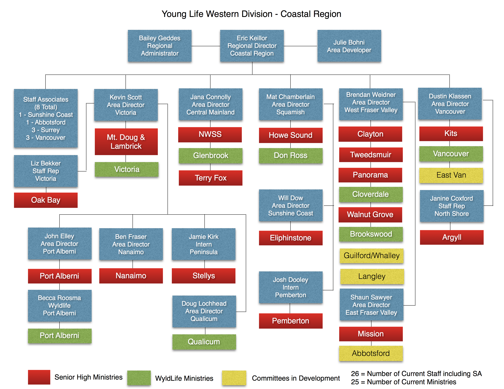
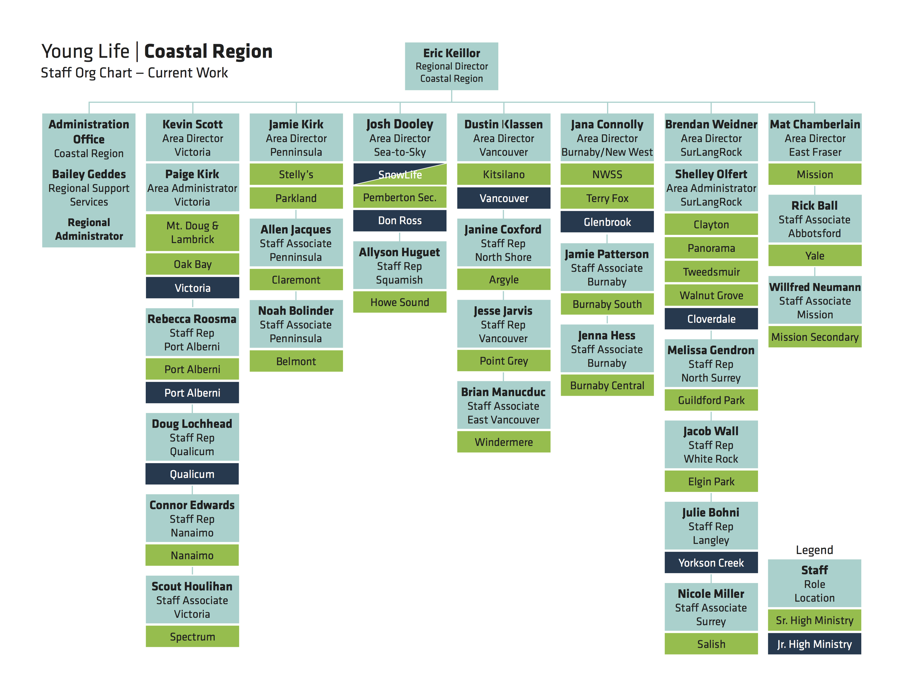

With a vision to standardize and modernize the visual identity of Young Life in British Columbia, I was asked to update and create resources for Area Directors and for the Director of the Coastal Region. Many of the decisions regarding colour and type were made based on the existing brand standards guide for Young Life in the United States in order to create further recognizability and consistency across the overarching brand of Young Life.

Over the course of a few months, my work became the standard of the visual identity of the Coastal Region. With a friendly voice and colour scheme, and cleaner presentation, Young Life Coastal presents as an approachable and current organization.